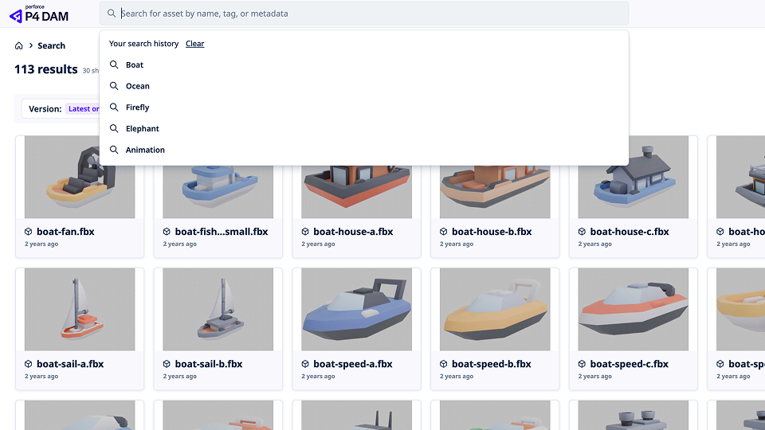
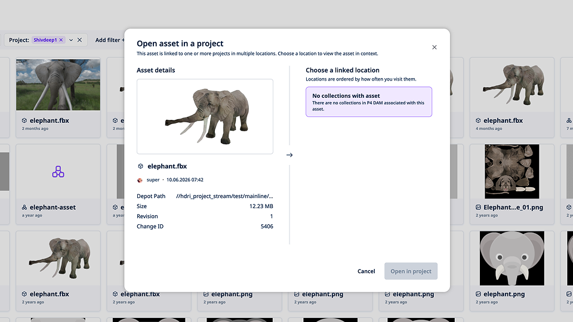

Context
At Perforce, I am the product design lead for P4 DAM, a digital asset management platform used by creative and technical teams in games, film, and VFX. Customers include Electronic Arts, Pinewood Studios, Xbox Game Studios, and Meta.
P4 DAM sits on top of Perforce version control. Studios store enormous libraries of 3D models, textures, and media. They need to find the right file, understand where they are in the hierarchy, preview it quickly, and decide whether it is ready for review. If any step is slow or unclear, users abandon the product for specialist tools.
My job was to own the product direction for the day-to-day experience: what users see first, how they search and filter, how they navigate folders, and how they review assets.
Why this work existed
Sales. Competitors’ UX was getting more current, raising the expected standard. At the same time, observing users on calls, watching internal staff use the product, and reading engineer Slack channels revealed a consistent pattern: people were using the browser back button or bookmarks instead of the built-in navigation.
The original concept was an all-encompassing DAM that tried to do everything at once. I stripped that back: get people to the asset, and once they are there, let them manage it.
What changed
Search history
| Problem | Search had no memory, forcing users to re-type identical queries and re-apply filters whenever they navigated. |
|---|---|
| Design change | I added persistent recent searches and saved filter states directly to the search bar. |
| Result | Repeat searches dropped to a single click, saving users around 15 to 20 seconds per lookup. |

Advanced filtering
| Problem | Active filters were hidden and easy to lose track of, particularly date ranges and metadata tags. |
|---|---|
| Design change | I redesigned the filter UI so active selections stay visible above results with one-click removal. |
| Result | Users can see, adjust, and clear active filters immediately without resetting their whole search. |
Breadcrumbs
| Problem | Folder structures were deep and inconsistent, leading people to rely on browser back buttons and bookmarks to stay oriented. |
|---|---|
| Design change | I built a single, responsive breadcrumb pattern across the entire application. |
| Result | Replaced reliance on browser navigation and stopped users getting lost in nested folder trees. |
Previewing assets
| Problem | Assets stored across multiple projects frequently opened in the wrong context, forcing artists to close the file and switch workspaces manually. |
|---|---|
| Design change | The updated preview drawer lets users pick their target project before opening. |
| Result | Removed wrong-project opens across shared asset libraries. |

Dashboard
| Problem | The landing page was cluttered with static widgets that did not help users start their daily work. |
|---|---|
| Design change | I replaced the noise with recent files, active reviews, and direct search entry points. |
| Result | Reduced the steps needed to reach an active file from four clicks down to one. |
Impact
Fixing core navigation rather than making cosmetic updates made the library faster and more predictable. Artists can locate files quickly, stay oriented in deep folder trees, and move assets through review without leaving their workflow.